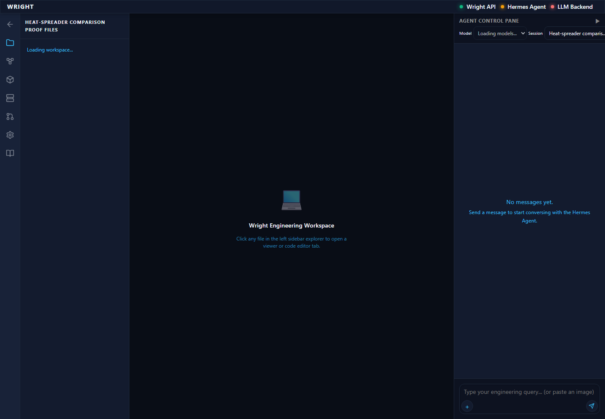
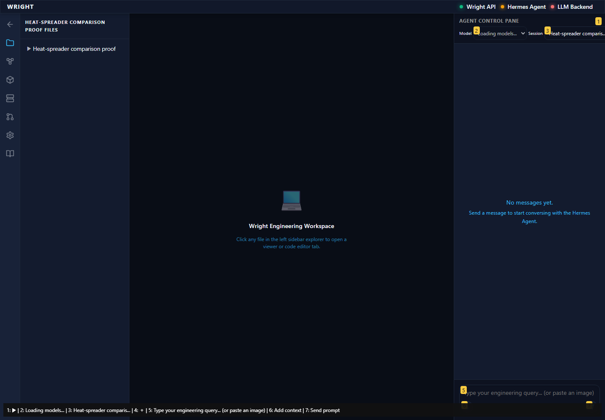
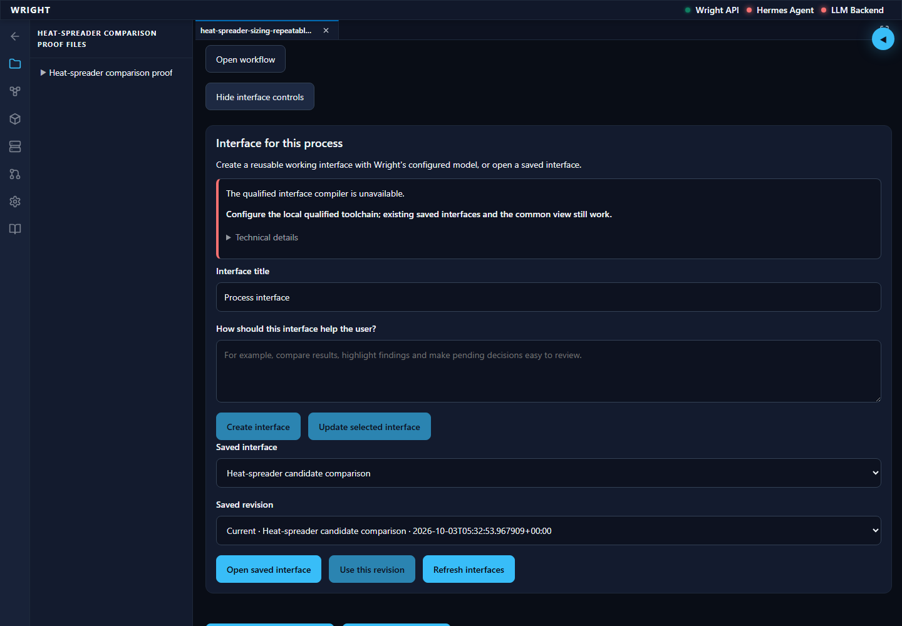
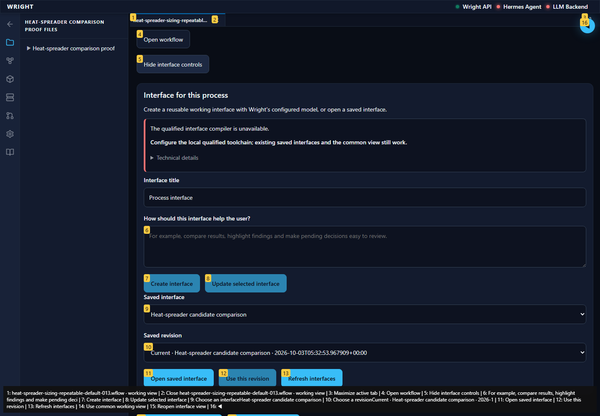
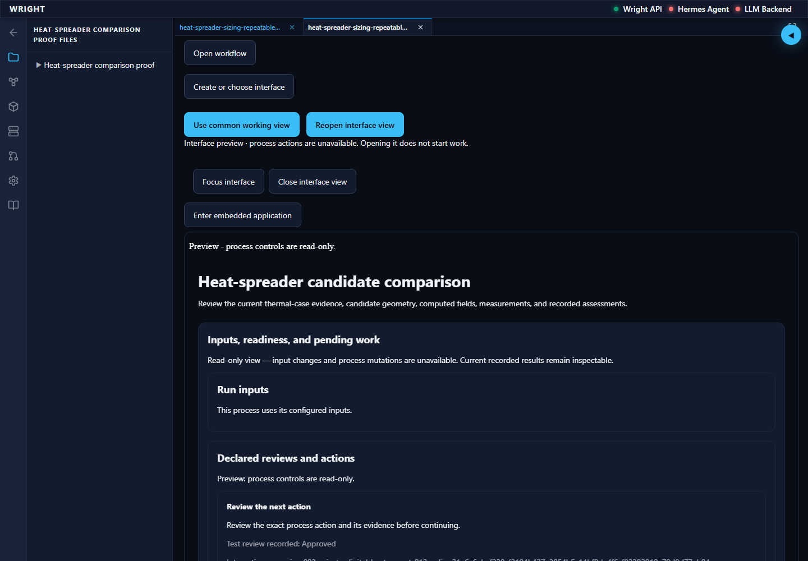
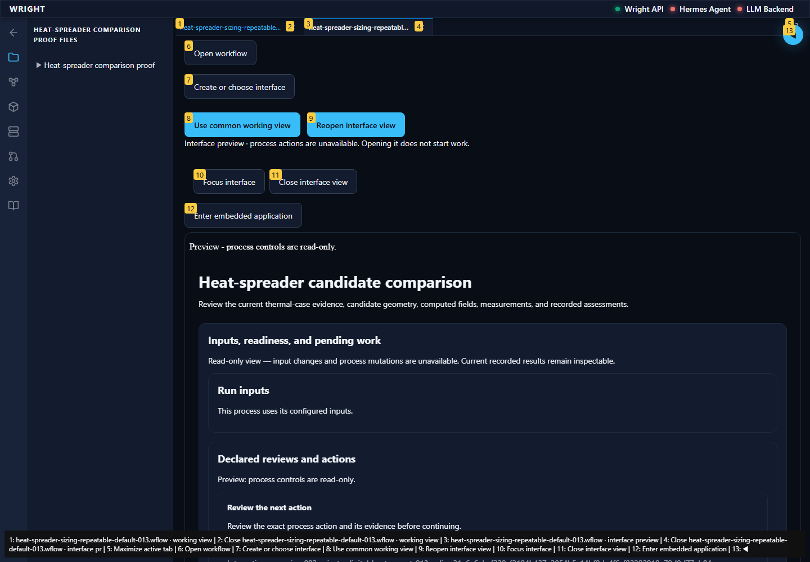
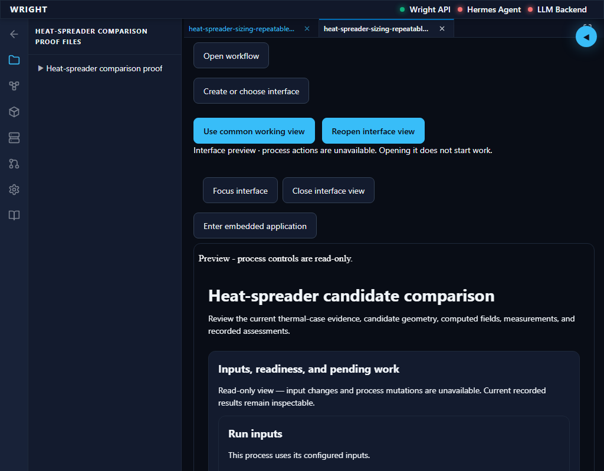
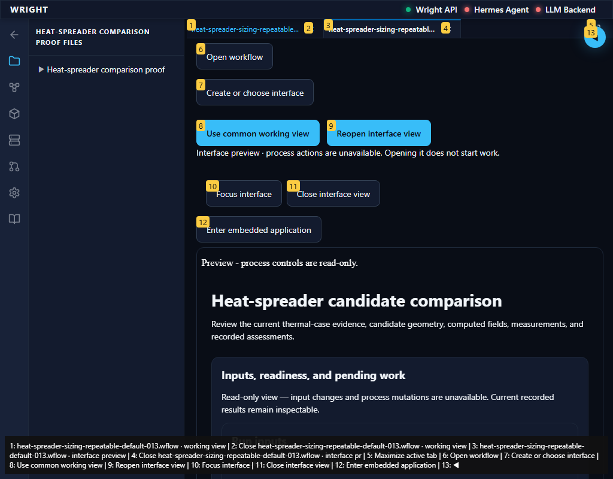

Normal Wright workspace and actual isolated engineering run. No mocked routes or physical action.
Status: blocked
The normal workspace opens on the same current installed package.
Expected: Normal workspace available.
Actual: Workflows is visible on the current installed host.
raw 
annotated 
The installed app exposes unavailable authoring and keeps the saved interface usable.
Expected: Creation unavailable, existing saved assets available, no model request.
Actual: Create interface is disabled while Open saved interface stays enabled on the current installed package.
raw 
annotated 
The active working tab and authoring controls have no detected WCAG A/AA violations.
Expected: No detected A/AA violations; manual accessibility acceptance remains separate.
Actual: Automated axe scan reports no violations.
The saved job preview renders the same exact engineering outputs without compiler/model availability.
Expected: Read-only preview and exact same eighteen result identities.
Actual: Preview banner, backend read-only context and exact engineering result parity verified.
raw 
annotated 
The normal workspace entry did not meet the expected state.
Expected: Workspace and established editor available.
Actual: expect(locator).toBeVisible() failed Locator: getByTestId('workspace-process-view') Expected: visible Error: strict mode violation: getByTestId('workspace-process-view') resolved to 2 elements: 1) <section class="process-workspace-view" data-testid="workspace-process-view" data-run-id="63b639c7a8f446cd90a9285921ab9072" aria-label="heat-spreader-sizing-repeatable-default-013.wflow · working view" data-process-path="workflows/heat-spreader-sizing-repeatable-default-013.workflow.wflow">…</section> aka getByTestId('workspace-process-view').first() 2) <section class="process-workspace-view" data-testid="workspace-process-view" data-run-id="63b639c7a8f446cd90a9285921ab9072" aria-label="heat-spreader-sizing-repeatable-default-013.wflow · interface preview" data-process-path="workflows/heat-spreader-sizing-repeatable-default-013.workflow.wflow">…</section> aka getByRole('region', { name: 'heat-spreader-sizing-' }) Call log: - Expect "to.be.visible" with timeout 5000ms - waiting for getByTestId('workspace-process-view')
raw 
annotated 